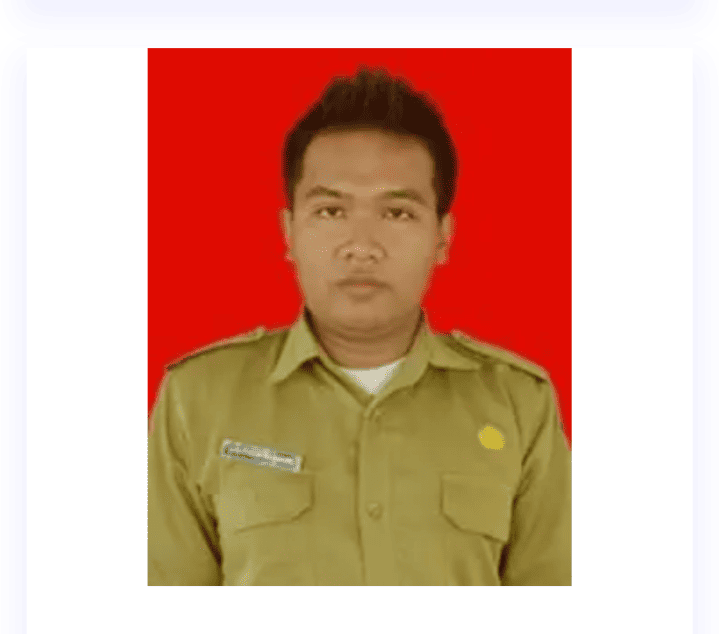
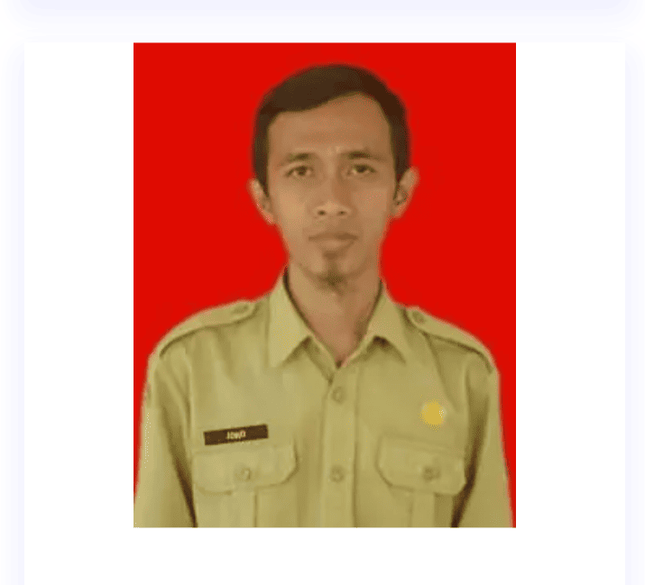
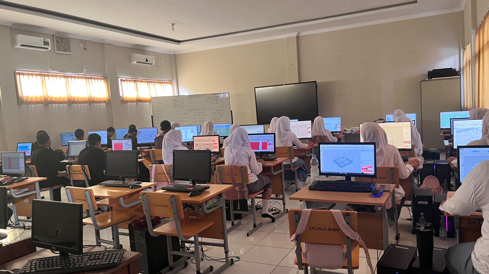
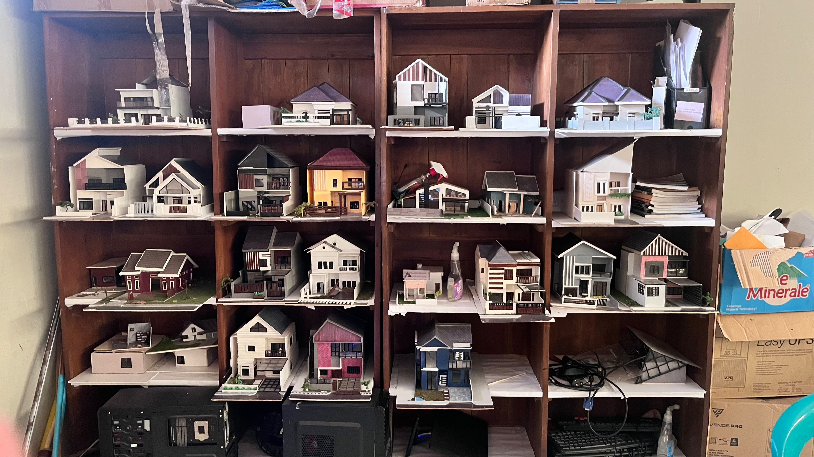

Pengertian Desain Pemodelan dan Informasi Bangunan (DPIB)
Desain pemodelan dan informasi bangunan atau yang kita kenal sebelumnya adalah TGB jurursan ini berfokus pada perencanaan,perancangan,pemodelan,serta pengelolaan informasi dalam dunia kontruksi bangunan.
Profil Guru DPIB

Rizqoni Falakhi, S.Pd.,MM.Pd.
Kaprodi DPIB

Asep Nika Harudin S.Pd.
Guru Produktif DPIB

Joko Hadi Triono, ST.
Guru Produktif RPL
Materi Pembelajaran DPIB
- Proses bisnis dan kewirausahaan
- Perkembangan teknologi dan isu global
- Gambar teknik dasar
- Teknik pengukuran tanah
- Karakteristik bahan bangunan
- Entimasi biaya
Fasilitas Jurusan DPIB

Komputer

Lemari karya siswa